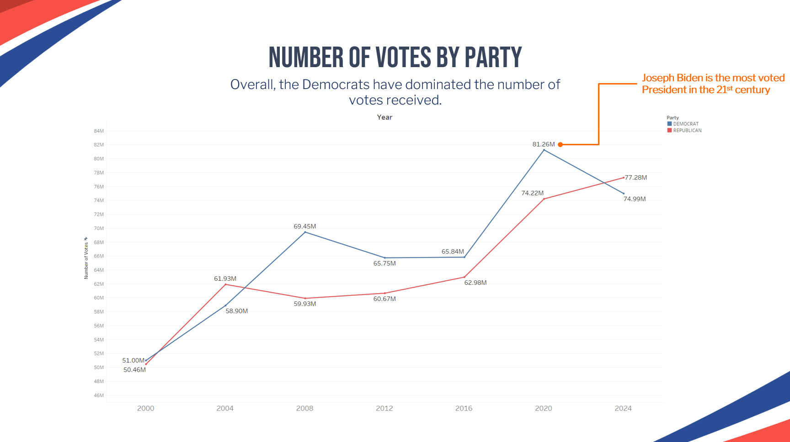
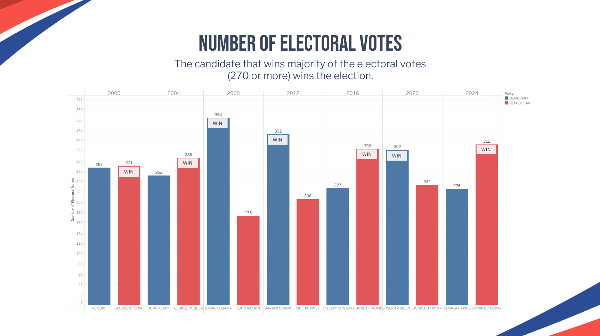

Understandin the U.S. Presidential Elections 2000-2024
This project uses Tableau to analyse electorate trends, voting trends, and party loyalty across states and counties for the U.S. Presidential elections between 2000-2024.
Description
Historically, the Democrats and the Republicans have been the most dominant political parties in the United States.
These analyses examine the balance of power between the two parties through understanding the popular vote, the electoral college, and voter loyalty. Ultimately, these analyses seek to answer the question - which party dominates? This project also provides recommendations for either party to win the elections.
The Popular Vote
Overall, the Democrats have dominated the total number of votes received over the years, with Joseph Biden being the most voted President in the 21st century.
However, as seen in the chart below, winning the most number of votes does not guarantee a win. In 2000 and 2016, Republicans George W. Bush and Donald J. Trump won with less votes.
Due to America’s electoral college system, a candidate can become President without actually winning the nationwide popular vote.
This has happened 5 times in U.S. history, most recently when Donald J Trump defeated Hillary Clinton in 2016.
The Electoral College
In the electoral college, each states has a different number of electoral votes that is awarded to whoever wins the poll in the state. As of 2024, the number of electoral votes for each state are as follows:
The candidate that wins majority of the electoral votes (270 or more) wins the election.
Overall, the dominance of the Democrats and the Republicans shifts with each election, with Barack Obama winning the most electoral votes in the 21st century.
Over the years, the Democrats usually win the Mid-Atlantic states and the West Coast, while the Republicans usually win the mountain states, the Great Plains, and the South.

Party Loyalty
Based on the number of wins in each state and county, it is clear that the Republicans have significantly more loyal voters than the Democrats, winning 16 states and 2066 counties consistently for every election in the 21st century.
What is the key to winning?
The prior analyses highlight a deeply divided electorate.
The Democrats dominate the popular vote, but the Republicans have significantly more loyal voters.
The Democrats usually win the Mid-Atlantic states and the West Coast, but the Republicans usually win the mountain states, the Great Plains, and the South.
This shows that the balance of power between the two parties is rather dynamic; no party is more dominant than the other.
So, what is the key to winning?
Recommendations - Battleground States
Battleground states have less loyal voters and can reasonably be won by either party. Importantly, these states usually hold a significant number of electoral votes.
By focusing on battleground states, candidates can seek to sway voters and gain electoral votes. This is because, historically, the party that wins most of the battleground states goes on to win the elections.
Conclusion
The U.S. Presidential elections in the 21st century is marked by partisanship and polarization.
The balance of power between the Democrats and Republicans is constantly shifting, reflecting the changing political landscape and voter preferences.
Crucially, battleground states can often determine the outcome of the election. Moving forward, candidates should focus significant resources and campaign efforts on these states in future elections.